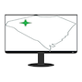

 Intranet Page
tab 1 links
tab 2 quick links
aws test
https://aws.amazon.com
git hub
https://github.com
fiddler
https://www.telerik.com/fiddler
microsoft
https://www.microsoft.com/en-us
Link 1
Link 2
Link 3